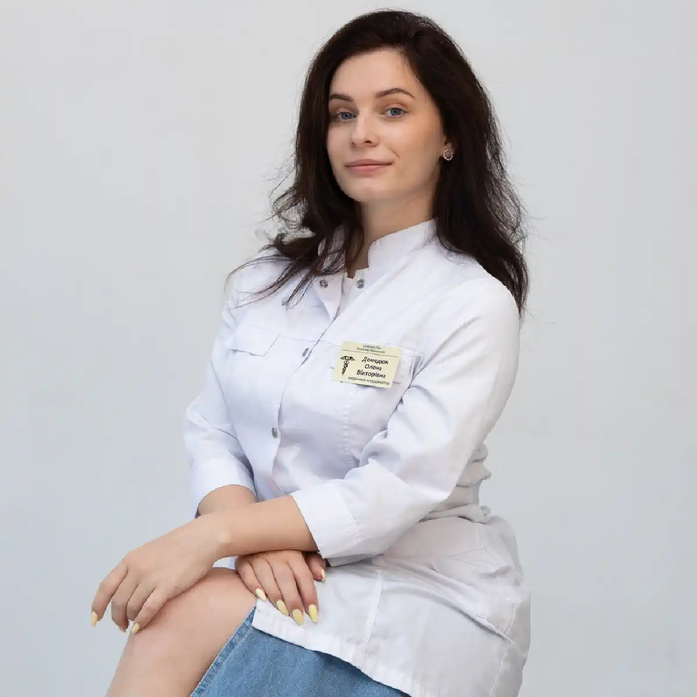

+38(068) 79 72 782
+38(068) 79 72 782Термінове виведення із запою Харків
Допомога без зволікання


Безкоштовна консультація, працюємо цілодобово 24/7
Допомога без зволікання

Термінове виведення із запою в Харкові — це невідкладна медична допомога, спрямована на швидке та безпечне усунення алкогольної інтоксикації, стабілізацію життєво важливих показників та відновлення загального стану пацієнта. Запій — це тяжкий стан, при якому організм тривалий час піддається токсичному впливу етанолу та продуктів його розпаду, що призводить за порушення роботи серцево-судинної системи, печінки, головного мозку та нервової системи.
На фоні запою можуть розвиватися небезпечні симптоми: стрибки артеріального тиску, тахікардія, сильна слабкість, тривожність, безсоння, тремор та виражена інтоксикація. Без своєчасної медичної допомоги такі стани можуть призвести до серйозних ускладнень та загрози для життя. Саме тому при перших ознаках погіршення стану важливо якнайшвидше звернутися за професійною наркологічною допомогою. Термінове виведення із запою дозволяє оперативно очистити організм від токсинів, нормалізувати роботу внутрішніх органів та значно знизити ризик розвитку ускладнень, забезпечуючи безпечне та контрольоване відновлення пацієнта.
Термінова наркологічна допомога потрібна в ситуаціях, коли стан пацієнта стрімко погіршується і зростає ризик розвитку ускладнень. Запій супроводжується вираженою інтоксикацією організму, порушенням роботи внутрішніх органів та нервової системи, тому зволікання може призвести до серйозних наслідків. Приводом для термінового звернення до лікаря є:
Додатково тривожними симптомами можуть бути підвищена пітливість, озноб, почуття страху, погіршення координації та загальне виснаження організму. Чим раніше розпочато лікування, тим вища ймовірність швидко стабілізувати стан пацієнта, знизити навантаження на життєво важливі органи та уникнути тяжких ускладнень. Своєчасна медична допомога дозволяє провести детоксикацію безпечно та під контролем лікаря.
Термінове виведення із запою вдома починається з первинного огляду пацієнта та комплексної оцінки його стану. Лікар-нарколог збирає анамнез, уточнює тривалість запою, наявність хронічних захворювань та скарги пацієнта. Проводиться вимірювання артеріального тиску, пульсу, рівня насичення крові киснем, а також визначається ступінь алкогольної інтоксикації та загальний стан організму. Після діагностики лікар підбирає індивідуальну схему лікування та приступає до проведення інфузійної терапії (крапельниці), спрямованої на швидке відновлення організму. Крапельниця від запою допомагає:
При необхідності додатково застосовуються препарати для нормалізації тиску, поліпшення сну, зниження тривожності та підтримки роботи внутрішніх органів. Процедура проводиться під постійним медичним контролем, що забезпечує її безпеку та ефективність. В середньому лікування займає від декількох годин, проте у важчих випадках може знадобитися повторна терапія або триваліше спостереження до повного поліпшення стану пацієнта.
Екстрена детоксикація при запої включає кілька послідовних етапів, кожен з яких спрямований на безпечне відновлення організму, зниження рівня інтоксикації та запобігання можливим ускладненням. Такий поетапний підхід дозволяє не лише усунути гострі симптоми, а й комплексно підтримати роботу життєво важливих органів. Основні етапи лікування запою:
Комплексний медичний підхід дозволяє не лише швидко усунути симптоми інтоксикації, а й значно знизити навантаження на організм, прискорити процеси відновлення та мінімізувати ризик розвитку серйозних ускладнень.
Склад крапельниці підбирається індивідуально, залежно від стану пацієнта, тривалості запою та вираженості інтоксикації. Лікар враховує загальний стан організму, наявність хронічних захворювань та поточні симптоми, щоб зробити лікування максимально безпечним та ефективним. Зазвичай до складу інфузійної терапії входять кілька груп препаратів, кожна з яких виконує свою важливу функцію в процесі детоксикації та відновлення організму:
Додатково, при необхідності, можуть застосовуватися препарати для корекції електролітного балансу (калій, магній), засоби для поліпшення роботи мозку та судин, а також медикаменти для зменшення симптомів абстинентного синдрому. Такий розширений та індивідуально підібраний склад крапельниці дозволяє впливати відразу на кілька систем організму, забезпечуючи більш швидке, безпечне та ефективне відновлення пацієнта після запою.
При терміновому виклику нарколог приїжджає максимально швидко — як правило, протягом 20–60 хвилин з моменту звернення. Така оперативність особливо важлива при тяжких станах, коли потрібне негайне медичне втручання для стабілізації пацієнта та запобігання ускладненням. Швидкий виїзд лікаря дозволяє своєчасно розпочати детоксикацію, знизити рівень інтоксикації та нормалізувати життєво важливі показники — тиск, пульс, дихання. Вже в перші години після початку терапії пацієнт відчуває полегшення, зменшується тривожність, поліпшується загальне самопочуття.
Цілодобова робота служби (24/7) забезпечує можливість отримати допомогу в будь-який час доби — незалежно від дня тижня, включаючи нічні години, свята та вихідні. Це особливо важливо, оскільки погіршення стану при запої часто відбувається раптово і вимагає негайної реакції. Оперативність та доступність наркологічної допомоги — один із ключових факторів, що дозволяють зберегти здоров’я пацієнта та уникнути тяжких наслідків.
Вартість термінового виведення із запою в Харкові починається від 2199 грн.
| Популярні послуги | Ціна |
|---|---|
| Нарколог Харків | Від 1500 грн |
| Крапельниця від алкоголю | Від 2199 грн |
| Виведення із запою вдома | Від 2199 грн |
| Кодування від алкоголізму | Від 6000 грн |
У деяких випадках лікування вдома може бути недостатнім і не забезпечувати необхідного рівня медичного контролю. При тяжких станах пріоритетом стає безпека пацієнта, тому потрібна госпіталізація в стаціонар. Госпіталізація необхідна при:
В умовах стаціонару пацієнт перебуває під цілодобовим наглядом лікарів, що дозволяє оперативно реагувати на будь-які зміни стану. Застосовуються більш інтенсивні та комплексні методи терапії, включаючи розширену детоксикацію, медикаментозну підтримку та моніторинг життєво важливих показників. Стаціонарне лікування забезпечує максимальну безпеку, знижує ризик ускладнень та дозволяє провести повноцінне відновлення організму в контрольованих медичних умовах.
Виведення із запою вдома має ряд значущих переваг, які роблять цей формат допомоги зручним, доступним та ефективним для більшості пацієнтів. Лікування проходить у звичній обстановці, що знижує рівень стресу та сприяє швидшому відновленню. До основних переваг належать:
Додатково важливою перевагою є збереження конфіденційності та можливість перебувати поруч із близькими, що позитивно впливає на емоційний стан пацієнта.
Анонімність — один із ключових принципів сучасної наркологічної допомоги, який дозволяє пацієнту звернутися за лікуванням без страху розголосу та негативних наслідків. Конфіденційний формат особливо важливий для людей, які хочуть зберегти свою репутацію, роботу та особисті відносини. Пацієнт отримує допомогу:
Уся інформація про стан пацієнта, факт звернення та проведене лікування суворо захищена і не розголошується третім особам. Такий підхід дозволяє зосередитися на відновленні здоров’я, не відкладаючи звернення за допомогою через страх осуду чи наслідків. Анонімне лікування створює комфортні та безпечні умови, в яких пацієнт може зробити перший крок до позбавлення від залежності.
Якщо потрібна термінова допомога, клініка UmbrellaPlus у Харкові надає професійне виведення із запою вдома та в стаціонарі. Наркологи клініки працюють цілодобово, швидко виїжджають на виклик та підбирають індивідуальне лікування з урахуванням стану пацієнта. Основне завдання — не лише зняти інтоксикацію, а й відновити організм, запобігти ускладненням та допомогти зробити перший крок до тверезого життя. Своєчасне звернення за допомогою — це ключ до збереження здоров’я та безпечного відновлення.
Для виклику нарколога: +38(050-021-69-57)

Так, ми суворо дотримуємося повної конфіденційності на всіх етапах лікування. Інформація про пацієнта, діагноз та проходження терапії не передається третім особам. Звернення до нас не тягне за собою постановку на облік. Ви можете бути впевнені у безпеці та анонімності.
Програма лікування розробляється індивідуально після консультації з фахівцем. Враховуються вид залежності, її тривалість, фізичний та психологічний стан пацієнта. Такий підхід дозволяє підвищити ефективність терапії та знизити ризик зриву. Ми не використовуємо шаблонні рішення.
Так, ми супроводжуємо пацієнтів і після основного курсу лікування. Проводяться консультації, рекомендації щодо адаптації та профілактики рецидивів. За потреби можлива подальша психологічна підтримка. Це допомагає зберегти результат та повернутися до повноцінного життя.
Анонимно

Ну в хлопців просто золоті руки й світла голова, мене капали Олексій та Владислав, буквально за декілька сеансів я наче заново народився, до цього пив більше 3х тижнів, не міг зупинитись, дуже радий що знайшов саме цих спеціалістів, всім рекомендую
Анонимно
В течение нескольких лет я злоупотреблял алкоголь, что привело к увольнению с работы и вызвало у меня мысли о суициде. Понимая, что такой образ жизни неприемлем, я обратился за помощью в клинику “Амбрела”. Здесь я смог преодолеть свою зависимость от спиртного благодаря заботливым и опытным врачам, а также эффективной системе лечения. Спустя более года я полностью избавился от желания употреблять алкоголь, и теперь моя жизнь вернулась в норму. Я даже не приближаюсь к спиртному! Благодарю врачей клиники “Амбрела” за их помощь и заботу.
Анонимно
Я обращался за помощью в различные клиники, пытаясь избавиться от своей зависимости от алкоголя, но без особых успехов. Никак не мог справиться с желанием прибегнуть к бутылке, пока друг не посоветовал мне обратиться в центр “Амбрелла”. Я записался на прием и был поражен заботливым отношением к пациентам. Уже прошло два года, и теперь я смотрю на алкоголь с абсолютной равнодушием, активно занимаюсь спортом и улучшил отношения в семье. Благодаря центру “Амбрелла” моя жизнь была спасена от алкогольной зависимости!
Анонимно
Хочу выразить свою благодарность врачам из центра алкоголизма “Амбрела” за то, что они буквально спасли мою жизнь. В течение последнего года я сильно увлекался питьем, и все это привело к катастрофическим последствиям. Хотя я ходил на терапевтические сеансы, но безрезультатно. Тогда я нашел адрес клиники “Амбрела” в интернете, изучил отзывы и информацию о центре, и записался на прием. Там мне сразу предложили методику лечения, которая помогла не только справиться с физической ломкой, но и психической зависимостью от алкоголя. Не буду распространяться, скажу только одно - после пребывания в этой клинике я стал другим человеком, и навсегда забыл, что такое привкус алкоголя. Больше меня не тянет на это! Я искренне верю, что в центре “Амбрела” трудятся настоящие целители душ!
Анонимно
После сложного развода мой сын начал подавлять свою обиду и горе употреблением алкоголя. Он старался скрывать это от меня, но я, как мать, почувствовала, что что-то не так. В конечном итоге, ситуация стала критической. Моя знакомая посоветовала мне обратиться в клинику “Амбрела”. Я была приятно удивлена их работой! Они помогли сыну преодолеть очередной период злоупотребления алкоголем, и с тех пор прошел уже более года, и он совсем не пьет.
Анонимно
Благодаря вашей помощи, моя семья была спасена. Я с трудом уговорила мужа начать лечение, и последний каплей был пьяное ДТП. К счастью, в аварии никто не пострадал, но это был для него сигнал к действию. Он наконец согласился пройти курс лечения на дому, в стационар не хотел ложиться. Лечение было трудным, и были моменты, когда срыв был настолько близок, но благодаря вашему центру Амбрелла мы справились с этим.
Анонимно
Для меня эта клиника стала настоящим спасением! Долгое время я упорно отказывался от лечения, уверен был, что со мной все в порядке. Но к счастью, семья уговорила меня попробовать. И сегодня я чувствую себя невероятно счастливым, осознавая, что мне абсолютно не нужен алкоголь. Огромное спасибо за помощь и поддержку, которые я получил здесь! Я благодарен вам за новую возможность жить полноценной и счастливой жизнью!
Анонимно
Выражаю благодарность ребятам, которые оказали мне помощь и не отвернулись. Уже 10 месяцев я остаюсь чистой. Благодарю за то, что помогли найти новый путь в моей жизни.
Номер телефону:
+380 (68) 797 27 82
+380 (50) 021 69 57
Адресу наркологічного центра вашого міста уточнюйте за
телефоном
Працюємо: Київ, Одеса, Львів, Харків, Дніпро, Запоріжжя,
Черкасах, Чугуєві, Чорноморську, Кам'янському
Telegram: t.me/umbrellaplus
Графік работы: Цілодобово